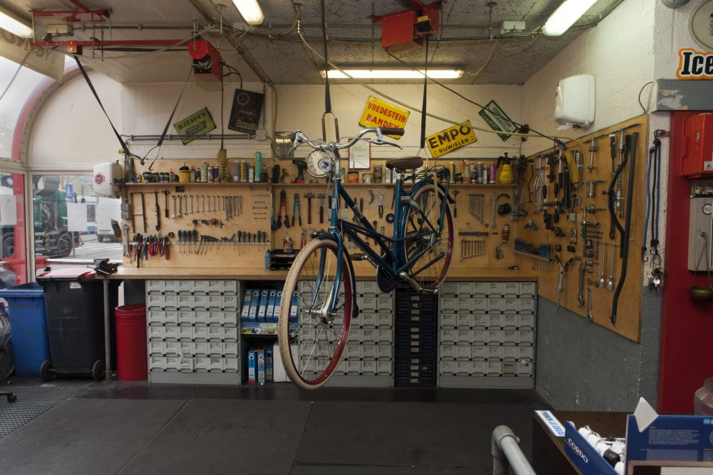
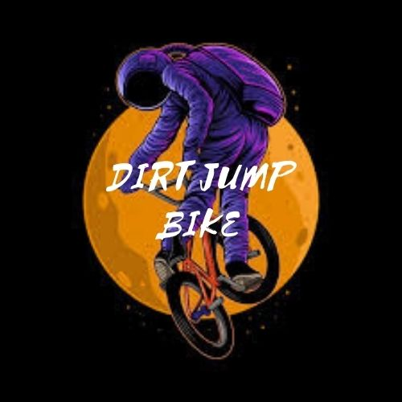
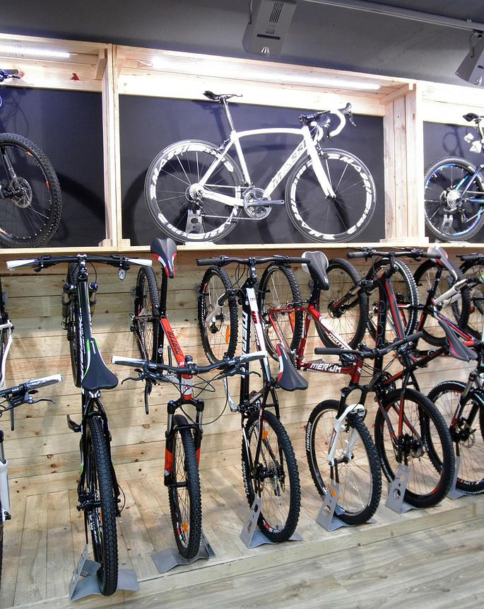

Esto comenzo como muchas empresas, comenze con mis amigos Mike y Steve a componer visicletas
de los chicos y al principio no cobrabamos pero despues lo pensamos y decidimos abrir una pequeña tienda
en la casa de mike donde arreglabamos bicicletas con un pequeño costo y nos gustaba mucho hacer esto,
desde siemrpe nos intereso competir en competencias y el unico que lo habia logrado era mike, pero solo aquí en
el país, y Steve y yo anelabamos un día competir y ganar, hasta que otro chico nos vio y nos dijo que habria una circuito
de Dirt Jump y que si nos interesaba y le dijimos sin duda alguna que si nos interesaba la idea de ir a competir, por lo que
teniamos ahorros para poder emprender el viaje que eran en otro departamento de Guatemala.
Una ves estando en la competencia que era libre, habiamos nada mas 12 jovenes compitiendo y los otros chicos si tenian
bicicletas de Dirt Jump y nosotros tres no teniamos, pero hicimos lo que pudismos para poder ganar la competencia, por nuestra
experiencia de hacer acrobacias pudimos hacer algunas mientras saltabamos. Primero teniamos que probar el circuito para despues saber cuanta distancia y cuanto pedaleo deberiamos de hacer, y así fue, todos los chicos estaban probando el circuito.
Cada vez quedábamos cada vez pocos chicos, cada vez había un eliminado, pero por pura suerte nosotros tres todavia quedábamos
en la competncia, y en total eramos 7 los ultimos que quedabamos en la competencia, poco a poco quedabamos menos, hasta el punto
quedo eliminado steve, y solo quedabamos 3, mike otro chico llamado mich y yo, y estabamos compitiendo por quien quedaria en primer, segundo y tercer lugar, comenzo mike e hizo unas buenas acrobacias y en la ultima vuelta se cayo por lo que le bajaron puntos, estabamos
mich y yo compitiendo por quien quedaria en primero y segundo lugar cuando el paso primero que yo en la ultima buelta y quizo hacer una
acrobacia nueva y no lo pudo hacer y se cayo, por lo que me sentia nerviso ya que tenia que hacer tres acrobacias bien para poder empatarlo y la cuarta hacerla bien para poder ganar y pase lo mas nervioso posible y consegui hacer las primeras tres y cuando iba a la cuarta pude hacer bien la acrobacia que fue el gane definitivo por lo que en tercer lugar quedo mike en segundo mich y en primer lugar quede yo.
Cuando estabamos en casa, celebrando los tres y con otros amigos , uno se acerca a nosotros y nos dice que porque no seguir compitiendo en mas circuitos y no solo en el país sino en otros países , pero nosotros sabiamos que en unas competencias nosotros tendriamos que pagar el viaje lo cual era muy dificil porque no teniamos lo sufuciente para hecerlo ni las bicicletas correctas, pensamos bien y llegamos a un tema por bromear, que era la de abrir un local mas grande donde podriamos hacer rampas pequeñas para los chicos y tambien ahí podriamos arreglar bicicletas, al principio lo dijimos como en broma , todo era risas en ese instante , cuando todos nos quedamos serios y fue cuando en realidad pensamos en hacerlo, en ya no trabajar en la casa de mike sino que trabajar en otro lugar mucho mas grande y así poder conseguir el dinero necesario para poder comprar bicicletas correctas para competir y para poder viajar.

Ya teniamos tiempo en la tienda y no tenia mucha fama, a la semana llegaban solo proyectos de bicicletas y mas de alguna de una rampa cerca, y así fue que pensamos que seria bueno promociaonar nuestra tienda y pensabamos en hacer bolnates pero sabiamos que no funcionaria, entonces pensamos en otra alternativa, por lo que pensamos en grabar la tienda y tambien grabarnos a nosotros haceindo acrobacias y arreglando las bicicletas. Pensamos mucho en hacerlo y se nos iba mucho tiempo en aditar los videos pero aun así buscamos en paginas como crear nuestro logotipo, que seria diferente a los demas pero con una onda muy buena para que sea llamativo y que tendga que ver con la bicicletas e hicimos un logo que nos gusto mucho a los tres y con el nombre que le pusimos nos gusto más y se quedo ese logotipo para nuestra tienda. Al imprimirlo en unos sticker y tambien en unas camisas para promocionar nuestra empresa, cuando nos daban una bicilceta para arreglar les pegavamos un sticker para que llevara la marca de la tienda, y algo que nos sorprendio muchisimo es que tubo mucho exito, a todos les gustaban nuestros logos en los stickers y en las camisas que de un momento a otro todos querian uno pero para poder conseguir una ahora todos querian arreglar mas de algo de sus bicicletas.

Nuestra tienda ya tenia que ser mas grande y a mas personal porque estabamos teniendo muchos proyectos y no nos alcanzaban las manos para hacer todo , pero eso nos tenia muy contentos porque nuestra pequeña empresa estaba siendo reconocida y no solo en el país sino que tambien internacionalmente por los videos que subiamos. Tuvimos que mudarnos a otro lugar mucho mas grande y contratando a mas personas para que nos ayudaran con los proyectos, contratamos a personas de confianza y tambien sabiamos que esas personas tenian buenos contactos por lo que seria muy bueno para la empresa porque ellos promocionarian aun mas ya no la tienda sino nuestra empresa porque ya era una. antes no teniamos hora de entrda y de salida porque era una tienda pequeña, pero ahora ya teniasmos un horario para entrar y salir, los almuerzos y todo, teniamos ya un orden y una sección para cada cosa en la empresa lo que era muy genial porque ya pudimos crecer más de lo que nos imaginamos.

ahora nosotos no solo arreglabamos bicletas sino que tambien ya teniamos productos a la venta lo que nos generaba un buen ingreso tambien, porque ahora arreglabamos bicicletas, haciamos rampas y vendiamos bicicletas, y no solo de un estilo o solo para una competencia en especial como dirt jump , sino que tambien para BMX y otras.Al fin nosotros sentimos que habíamos logrado algo muy grande, sabiamos que habiamos logrado un sueño, un sueño que anhelavamos mucho, lo pudimos cumplir y ahora le doy gracias a Dios que somos una empresa y ahora nos piden bicicletas en internet, tambien rampas , y hemos donado un par para unas competencias y en otras compentecias con nosotros acuden y les vendemos rampas y tambien en ocaciones domanos bicilcetas personalisadas con el fin en primer lugar de ayudar a jovenes y para que nocozcan aun mas nuestra empresa y la visiten algun día.